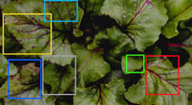
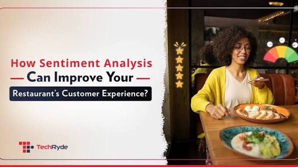
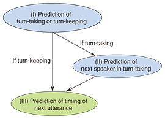

Currently pursuing B.Tech in Computer Science and Artificial Intelligence at IIIT Delhi. Interested in Machine Learning, Computer Vision, Natural Language Processing and Artificial Intelligence.
Download Resume View ProjectsI am a Computer Science and Artificial Intelligence undergraduate at Indraprastha Institute of Information Technology Delhi (IIIT Delhi). I enjoy learning new technologies and working on Machine Learning, Computer Vision and Natural Language Processing projects.
B.Tech (CSAI)
2022 - 2026
CBSE
CBSE

Developed a CNN-based plant disease detection system with recommendation support using LLM. Achieved 96.27% test accuracy.

Performed sentiment analysis on more than 11 lakh food reviews using traditional Machine Learning and Deep Learning models.

Developed transformer-based dialogue models integrating emotional context and patient simulation using Hugging Face Transformers and PyTorch.
Email : roshan22418@iiitd.ac.in
GitHub : https://github.com/roshan22418
LinkedIn : https://www.linkedin.com/in/roshan228906/